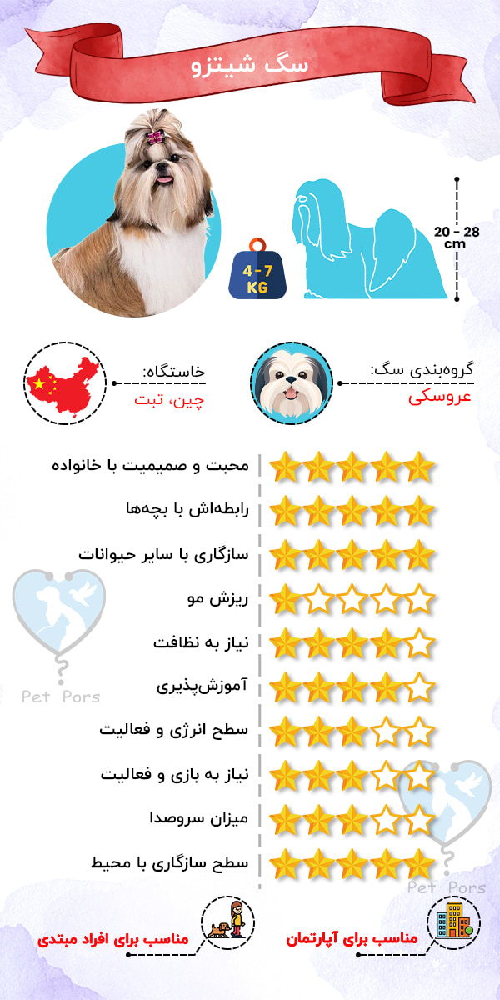
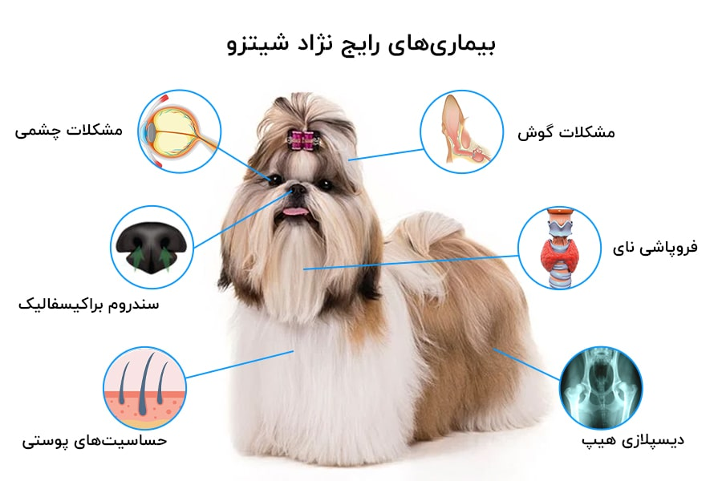

سگ شیتزو سگی پر انرژی و سرزنده است که از کنار آدمها بودن خوشحال میشه و لذت میبره و این لذت بردن رو به آدمهای اطرافش هم منتقل میکنه. سگ نژاد شیتزو سالهاست که جزو محبوبترین نژادهای سگ در دنیا به حساب میاد. طبیعت تیزهوش، هوشیار و وفادار shih tzu زندگی کنارشون رو خیلی جالب و لذت بخش میکنه.
شیتزوها جزو بهترین سگ های آپارتمانی هستن. خوشحال نگه داشتن اونا کار سختی نیست و این سگهای کوچولو حتی توی آپارتمانهای کوچیک هم میتونن زندگی خوبی داشته باشن.
- با اینکه شیتزوهای امروزی جزو نژادهای براکیوسفال یا پوزه تخت به حساب میان ولی اصالتا اینطوری نبودن!
- نژاد شیتزو نژاد مورد علاقه بیوه امپراطور چین (تزو هسی) بوده.
- این سگها در امپراطوری چین کاخ مخصوص به خودشون رو داشتن و کلی خدم و حشم در خدمت اونا بودن تا به کارهاشون رسیدگی کنن.
- معنی اسم شیتزوها در زبان مندرین، “شیر کوچک” هست.
- شیتزوها و شیتزوتریرها یکی از محبوبترین نژاد سگ در ایران محسوب میشن.
- سگهایی کاملا اجتماعی و عاشق آدمها هستن.
- ریزش موی کمی دارن و برای کسانی که به موی سگ آلرژی دارن انتخاب خوبی هستن.
- برای کسایی که تاحالا سگ نداشتن انتخاب خیلی خوبی هستن.
- با کودکان هر سن و سالی به خوبی کنار میان.
- طبیعت مهربونشون باعث میشه یه سگ همدم عالی براتون باشن.
- نگهداری از پوشش بلند شیتزوها کار راحتی نیست و کمی زمان بره.
- شیتزوها از اینکه تنها بمونن متنفرن و ممکنه دچار مشکل «اضطراب جدایی» بشن.
- ممکنه وقتی تنها میمونن پارس کنن.
- ممکنه گاهی لجباز و خودسر بشن.
- بیماریهای نژادی نسبتا زیادی دارن.

تاریخچه سگ شیتزو
در مورد منشا اصلی سگ شیتزو نظرات متفاوتی وجود داره، برخی معتقدن این نژاد توسط راهبان تبتی توسعه یافته و به عنوان هدیه به خانواده سلطنتی چینی داده شده است. اما برخی دیگه معتقدن که شیتزو تو چین از تلاقی دو سگ پوزه تخت مثل نژاد لهاسا آپسو و پیکینیز بوجود اومده. با این حال نام شیتزو از کلمه چینی “شیر” به دلیل ظاهر شیر مانند این نژاد گرفته شده.
این سگ یک نژاد باستانی به حساب میاد و از ۱۰۰۰ سال پیش تو تبت و چین پرورش داده میشده و تا سال ۱۹۳۰ تو جهان ناشناخته بوده. گفته میشه که سگ شیتزو یکی از ۱۴ نژاد قدیمی سگ تو دنیاست که ریشهاش از گرگها میاد.
منشاء دقیق این سگ عروسکی به عنوان حیوان خانگی سلطنتی چینی مبهمه و تاریخهای متفاوتی براش ارائه شده. این نژاد در ابتدا فقط یک حیوان خانگی برای خانواده سلطنتی سلسله مینگ بوده و بسیار مورد توجه و احترام قرار میگرفته. این سگ تو اواخر دهه ۱۸۰۰ میلادی حیوان مورد علاقه امپراتور تزو هسی بوده.
از لحاظ تاریخی، خاندان سلطنتی چین اجازه نمیدادن که این سگ خارج از اشراف معامله بشه. اما سرنجام تو سال ۱۹۳۰ میلادی، این سگ توسط لیدی براونریگ (همسر فرمانده کل فرماندهی شمال چین) از پکن به انگلستان آورده شد. این نژاد پس از جنگ جهانی دوم، توسط برادرزادههای لیدی براونریگ، وارد ایالات متحده شد و تو سال ۱۹۶۹ توسط (AKC) به رسمیت شناخته شد.
ویژگیهای ظاهری
- سیاه
- سفید
- سیاه سفید
- جیگری
- قرمز
- نقرهای
- آبی
خلقوخو و خصوصیات نژاد شیتزو
شیتزوها سگهایی سرزنده، با اعتماد به نفس و خوش برخورد هستن که هیچ فعالیتی رو به بودن کنار خانواده و صاحبشون ترجیح نمیدن. همین خصوصیات باعث شده این نژاد، سگ خانواده فوقالعاده و محبوبی تو دنیا باشه.
سگهای shih tzu در عین باهوش بودن، عاشق راضی کردن صاحبشونن و برای کسانی که تا حالا سگ نداشتن انتخاب فوق العادهای هستن. یک نکته مهمی که در مورد این نژاد سگ وجود داره اینه که، تحمل تنهایی رو ندارن و نباید برای مدت زمان زیادی تنهاشون بزارین. اگه سبک زندگی شما جوریه که زمان زیادی رو تو خونه نیستین، بهتره سگ شیتزو نگیرین.
یکی از خصوصیات بارز این نژاد، اینه که برخورد نسبتا خوبی با غریبهها دارن. البته به این معنی نیست که به محض دیدن یه غریبه باهاش ارتباط دوستانه برقرار کنه و یا باهاش بازی کنه. یعنی لازم نیست نگران این باشین که سگ شما مهمونها و افراد غریبه رو به محض دیدن گاز بگیره یا بهشون پرخاش کنه.
غریزه شکار تو نژاد شیتزو هم خیلی زیاد نیست، پس با سایر سگها و حیواناتی مثل پرندهها یا جوندهها (همستر، خوکچه هندی و …) ارتباط خوبی دارن و به خوبی باهاشون کنار میان.
شیرهای کوچیک (shih tzu) جزو بهترین سگهای آپارتمانی به حساب میان. با این حال توانایی سازگاری و انطباق بالایی با محیط و شرایط جدید دارن و با همه چی به خوبی کنار میان.
این نژاد اگه به خوبی و از سن پایین تعلیم داده نشه، پر سر و صدا هست و ممکنه پارس کردنش اذیت کننده بشه. بخصوص وقتی تنها میمونن. البته این موضوع طبیعیه چون این نژاد به عنوان سگهای هوشیار (alert dog) پرورش داده شدن و پارس کردن خصیصه اوناست.
آموزش دادن به این نژاد سگ آسونه، اما تعلیم این نژاد باید از سنین پایین شروع بشه تا سریعتر یاد بگیرن و در بزرگسالی یه سگ خوش رفتار باشن. این سگ موقع آموزش تمرینهایی که پاداشهای بزرگتری و لذیذتری داشته باشه رو بیشتر دوست داره.
فعالیتهایی که میتونه برای این نژاد سرگرم کننده باشه شامل: پیاده روی کوتاه با صاحبش، بازی کردن تو حیاط خلوت یا محیط سرپوشیده، یادگیری ترفندهای متنوع و در آغوش گرفته شدن توسط اعضای خانواده هست.
تربیت سگ شیتزو
تربیت سگ یکی از مهمترین اقداماتیه که باید حتما از زمان تولگی این نژاد جدی گرفته بشه. اگه تربیت این سگ جدی نگیرین، تو بزرگسالی سگهایی لجباز، خودسر و دارای انواع مشکلات رفتاری میشن که صاحبانشون رو اذیت میکنن.
آموزش شیتزو میتونه هم سرگرم کننده و هم یه تجربه خسته کننده باشه. این نژاد تمایل داره صاحبش مجذوب خودش کنه تا این اجازه رو داشته باشه که هر کاری میخواد بکنه. این نژاد فعالیت کمی داره و اگه نتونین درست تربیتش کنین، به یک سگ کم تحرک و چاق تبدیل میشه.
استفاده از تشویقی و جایزه تو تربیت این سگ خیلی کار راه اندازه. استفاده از روشهای تربیتی منفی و خشونت روی این نژاد اصلا جواب نمیده و بدتر لجبازش میکنه. از تولگی با یاد دادن فرامین مقدماتی (مانند بیا، بشین، بمون، ساکت و …) به توله سگ شیتزو، عادتش بدین که از دستوراتتون پیروی کنه.
برای تربیت این نژاد:
- از تولگی شروع کنید.
- در آموزش به شیتزو مصمم و قاطع باشین.
- حتما روزی ۱۵ دقیقه برای آموزش به سگ زمان بزارین.
- با سگ برخورد و رفتار صحیح رو انجام بدین.
- دوران طلایی اجتماعی کردن سگ رو که ۲ تا ۴ ماهگی هست جدی بگیرین.
- به زندگی سگ نظم و قانون بدین.
- از تولگی چالشهایی رو برای سگ تعیین کنین.
تربیت سگ شیتزو مبحثی طولانی و پر از نکته هست. تربیت کردن سگها بدون داشتن اطلاعات کافی، تقریبا غیر ممکنه. برای همینه که میگیم دونستن روش صحیح تربیت سگ برای هرکس که سگ داره یا میخواد سگ بگیره، از نون شب واجب تره.
برای همین در تیم پت پرس به فکر افتادیم برای کمک به شما در این کار مهم، کتاب الکترونیکی راهنمای جامع تربیت سگ شیتزو رو تالیف و طراحی کنیم. با خواندن این کتاب الکترونیکی، میتونید سگ shih tzu رو تربیت کنید و از داشتن یک سگ خوش رفتار و تربیت شده لذت ببرید😊😊
راهنمای نظافت و نگهداری
داشتن اطلاعات کافی درباره نگهداری از سگ (هر نژادی) باعث میشه از بروز مشکلاتی که علت خیلی از اونها آگاه نبودن صاحبشون هست، پیشگیری بشه. درسته که این نژاد ریزش موی کمی داره اما به این معنی نیست که نیازی به نظافت دورهای و منظم نداشته باشه. در ادامه این بخش به نیازهای مراقبتی و نظافتی این سگ عروسکی میپردازیم.
مراقبت از پوست و مو
- موهای shih tzu هیچ وقت نباید به حدی بلند بشه که برای راه رفتنشون مشکل ایجاد کنه یا جلوی دید اونها رو بگیره.
- موهای این سگ لازمه که هر روز برس کشیده بشه، اگه موهاشون هر روز برس کشیده نشه، گره میخوره و باز کردن این گرهها سخته.
- اگه تو موهای شیتزو گره مشاهده کردین، به هیچ وجه قبل از باز کردن گرهها اقدام به برس کشیدن نکنین.
- هرچقدر موهای این نژاد بلندتر بشه، احتمال اینکه دچار بیماری پوستی بشه هم بالا میره. پس لازمه که این سگ هر ۲ هفته یکبار حمام بشه.
- همچنین نیازه که هر چند ماه یکبار پیش آرایشگر برن تا موهاشون اصلاح بشه.
مراقبت از چشم
بیماریهای چشمی تو سگ نژاد شیتزو جزو بیماریهای رایج به حساب میاد. پس لازمه که موهای اطراف چشم سگ رو کوتاه کنین یا با یک کِش اونا رو جمع کنین تا تو چشم سگ نره. همونطور که گفتیم چشمهای این سگ برجسته هست و اگه موهاش روی اون ساییده بشه، میتونه باعث ایجاد التهاب چشم و در نتیجه مشکلات چشمی بشه.
علاوه بر این به خاطر صاف بودن صورت سگ shih tzu ریزش اشک تو این نژاد رایجه. تولید بیش از حد اشک یا مسدود شدن مجاری اشک منجر به تجمع رنگدانه قهوهای مایل به قرمز، گوشه چشمها میشه که ممکنه به سمت پوزه سگ کشیده بشه.
تمیز و خشک نگه داشتن اطراف چشم سگ، بهترین راه برای جلوگیری از لک شدن این قسمت صورت سگ هست. گوشه چشمهای این نژاد رو هر روز به دقت با پنبه خیس تمیز کنین تا ترشحات چشم موهای اون ناحیه رو کثیف و بد رنگ نکنه.
اما در صورتی که قسمت بیش از حد قهوهای شده بود و چشمهای سگ هم متورم و قرمز شده بود، لازمه که با دامپزشک متخصص تماس بگیرین.
مراقبت از گوش
همونطور که تو ابتدای مقاله هم گفتیم، این نژاد گوشهای افتادهای داره. به همین دلیل رویش مو داخل گوش و همینطور بسته بودن مجرای گوش تو این نژاد میتونه باعث نگه داشته شدن رطوبت تو محیط گوش بشه. تمیز کردن عادی گوش با استفاده از گوش پاک کن خشک میتونه برای جلوگیری از تجمع رطوبت تو این ناحیه مفید باشه. همچنین اصلاح موهای زائد داخل گوش، هنگام مراجعه به آرایشگاه میتونه تو سالم نگه داشتن گوش سگ شما کمک کننده باشه.
اگه در مورد تمیز کردن گوش سوال دارین یا نمیدونین دقیقا چه کارهایی باید بکنین، نگران نباشین، کافیه مقاله آموزش تمیز کردن گوش در ۹ قدم رو بخونین.

بیماریهای رایج نژاد شیتزو
این نژاد به طور کلی نژاد سالمیه. با این حال مستعد ابتلا به برخی بیماریها و مشکلات سلامتی هست، که مهمترینهاش عبارتند از:
آلرژی و بیماری های پوستی
صاحبان این شیر کوچیک باید بدونن که سگشون به آلرژیهای پوستی حساس هستن. معمولا آلرژیهای اونا به صورت خارش، تحریکات پوستی و درماتیت ظاهر میشه. آلرژی در این سگ میتونه از ۳ طریق بوجود بیاد:
- آلرژی غذایی: که میتونه با حذف برخی غذاها از رژیم غذایی سگ درمان بشه.
- آلرژی تماسی: که در اثر واکنش به یک ماده خارجی مثل پودر کک، شامپو سگ یا سایر مواد شیمیایی ایجاد بشه.
- آلرژی استنشاقی: که توسط آلرژنهای موجود تو هوا مثل گرد و غبار، خاک و … بوجود میاد.
از اونجایی که موارد متنوعی میتونه باعث بروز مشکلات پوستی سگ بشه، لازمه که نسبت به عوامل بروز اونا آگاه باشین تا بتونین از بروزشون جلوگیری کنین. پیشنهاد میکنیم حتما مقاله بیماریهای پوستی سگ رو مطالعه کنین.
مشکلات تنفسی
۱- سندرم انسدادی راه هوایی براکیسفالیک (BOAS):
این نژاد سگ هم، مثل بقیه سگهای براکسیفالیک، استخوان جمجمه کوتاهی داره که در قسمت صورت و بینی فشرده میشه. این ساختار جمجمه باعث شده تا راه تنفسی کوچیکی داشته باشن و نفس کشیدن برای سگ شیتزو سخت باشه.
سگهایی که دچار سندروم انسدادی راه هوایی براکیسفالیک (BOAS) هستن، ممکنه تو تنظیم دمای بدنشون مشکل داشته باشن. بنابراین توصیه میکنیم از راه رفتن با شیتزو اونهم تو دمای بالا خودداری کنین. در عوض سعی کنید سگتون رو اوایل صبح یا اواخر عصر که هوا خنکتر هست به پیادهروی ببرین.
۲- فروپاشی نای
یکی دیگه از مشکلات تنفسی رایج که ممکنه برای این نژاد رخ بده، فروپاشی نای هست. تو این بیماری غضروفی که به نای شکل میده، میتونه ضعیف و صاف بشه و تنفس سگ رو با مشکل مواجه کنه.
مشکلات چشمی
مشکلات چشمی تو شیتزو یه چیز غیر معمول نیست، چون چشمان درشت آنها برآمده هست. بیماریهای رایج چشمی در shih tzu عبارتند از:
۱- آب مروارید
چشمهای درشت و حساس شیتزو و همچنین ژنتیک اونا میتونه باعث آب مروارید تو سگ بشه. آب مروارید، یک اختلال ارثیه که باعث تیرگی چشم میشه، که میتونه به طور قابل توجهی روی بینایی سگ شما تأثیر بزاره.
این عارضه همچنین با افزایش سن سگ یا در اثر یک بیماری دیگه بوجود بیاد، اما علائم بروزش ثابته، علائم آب مروارید تو سگ عبارتند از:
- ابری بودن چشم(ها)
- ترشح بیش از حد از چشم
- حساسیت به نورهای روشن
- درد ناشی از علت زمینهای
- از دست دادن بینایی
اگر حیوان خانگی شما هر یک از این علائم را نشان داد، باید با دامپزشک متخصص تماس بگیرین.
۲- آتروفی پیشرونده شبکیه
آتروفی پیشرونده شبکیه یک بیماری دژنراتیو هست که سلولهای شبکیه رو تحت تاثیر قرار میده که در نهایت منجر به نابینایی میشه. این یک بیماری ژنتیکیه که هیچ محرک خارجی، اقدامات پیشگیرانه یا درمانی موثری نداره. علاوه بر این بیماریهای چشمی، بیماریهایی مانند خشکی چشم، انتروپیون و پروپتوز نیز سلامت این نژاد عروسکی رو تهدید میکنه.
مشکلات گوش
این نژاد به خاطر داشتن گوشهای افتاده (floppy ears) مستعد ابتلا به عفونت گوش هست. عفونت گوش میتونه به خاطر آلرژی، بیماریهای زمینهای یا رطوبت بیش از حد تو کانال گوش ایجاد بشه. گوشهای سگ رو به صورت منظم و دورهای چک و تمیز کنین تا دچار عفونت نشن. تمیز کردن گوشهای سگتون، اونم به صورت منظم میتونه به جلوگیری از بروز عفونت گوش کمک کنه.
دیسپلازی هیپ
دیسپلازی هیپ در سگ یک مشکل ژنتیکی شایع و دردناکه که بیشتر تو سگهای نژاد بزرگ مثل ژرمن شپرد دیده میشه. اما این بیماری تو نژاد شیتزو هم خودش بروز میده. دیسپلازی زمانی اتفاق میافته که مفاصل ران سگ به طور غیر طبیعی رشد میکنه، که بسته به شدت میتونه نشونههای متفاوتی داشته باشه.
از علائم این بیماری میشه به لنگیدن هنگام راه رفتن، پریدن و یا حرکت کردن تو سگ اشاره کرد. در موارد شدیدتر ممکنه که سگ شما اصلا نتونه بایسته و همش دراز بکشه.
تغذیه و رژیم غذایی
همه سگهای عروسکی نیاز به برنامه غذایی خاصی دارن، این موضوع در مورد سگ شیتزو و کراسهای اون هم صادقه، دلیلش هم در ادامه بهتون میگم.
سگ نژاد شیتزو متابولیسم و سوخت و ساز بالایی داره و در مقایسه با سگهای نژاد بزرگ به انرژی بیشتری در روز نیاز داره. از طرف دیگه این نژاد سگ مستعد هیپوگلیسمی یا افت قند خون هست و نباید برای مدت زمان طولانی گرسنه بمونه.
همچنین این نژاد سگ مستعد چاقی هست، بنابراین مهمه که اونا رو با یک رژیم غذایی متعادل تغذیه کنین و از تغذیه بیش از حد اونا پرهیز کنین.
از اونجایی که مبحث تغذیه shih tzu خیلی مهم و حساسه و تاثیر مستقیم روی سلامتی و طول عمرش داره مطلب جداگانهای رو به این موضوع اختصاص دادیم و پیشنهاد میکنیم برای اطلاعات بیشتر مقاله غذای سگ شیتزو رو بخونید.
انواع شیتزو کراس
شیتزو کراس اصطلاحا به سگی گفته میشه که از جفت گیری (میکس) یه شیتزو با نژاد دیگهای به وجود اومده، یعنی فقط یکی از والدینش (پدر یا مادر) یه شیتزوی خالص بوده. معمولا میکسهای این نژاد اسامی بامزهای هم دارن که ترکیبی از اسم دو نژاد میکس شده هست. برخی از معروفترین shih tzu cross عبارتند از:
- مال شی: کراس شیتزو و مالتیز (معروفترین)
- شینزه: کراس شیتزو و پکینیز
- بیتزو: ترکیب shih tzu و بیگل
- شی پو: کراس شیتزو و پودل
- شورکی زو: کراس shih tzu و یورکشایر تریر
- کوک آ زو: میکس کاکر اسپانیل و shih tzu
قیمت سگ شیتزو خالص و میکس
قیمت این نژاد سگ تو بازار ایران خیلی متنوع هست و دلیل اصلیاش هم میتونه وجود کراسهای متنوع برای این نژاد باشه. سگ شیتزو و سایر کراسهای اون تو بازار از حدود قیمت ۱۰ میلیون تومن تا ۱۵ میلیون تومن هست.
قبل از تصمیم برای خرید این نژاد بهتره به این نکات زیر توجه کنین:
- سگ رو مستقیم از پرورش دهنده بخرید
- سگ شیتزو ۲ ماهه بخرید و از خرید تولههای زیر ۲ ماه خودداری کنید؛ چون تولهها به شیر مادرشون نیاز حیاتی دارن.
- بلافاصله بعد از خریدنش پول رو کامل پرداخت نکنین و اول به کلینیک دامپزشکی مراجعه کنین تا سلامت سگ کاملا تایید بشه.
- مقاله راهنمایی خرید سگ رو مطالعه کنین تا یاد بگیرین بهترین و سالمترین سگ رو با مناسبترین قیمت خریداری کنین.
نکاتی درباره خرید کراسهای این نژاد
- توجه کنین که قیمت کراس این نژاد از قیمت یه نژاد اصیلش پایینتره، حتی اگر ظاهرش از نظر شما بهتر از خالص باشه!
- قبل از خرید حتما از فروشنده بپرسید که این سگ از میکس چه نژادی با شیتزو متولد شده و اصرار کنین عکس پدر و مادرش رو بهتون نشون بده.
- سگ شیتزوی کراس ویژگیهای نژاد اصیلش رو نداره و خریدش مثل خرید هر نژاد میکس دیگهای خوبیها و بدیهای خودش رو داره.
- خوبی خرید سگ کراس اینه که بیماریهای نژادی متداول شیتزو توی اونا کمتر دیده میشه.
- بدی خرید سگ کراس اینه که شخصیت و ظاهر اونا تو بزرگسالی غیر قابل پیش بینی هست و باید انتظار هر چیزی رو داشته باشین.
نظر شما چیه؟
خب تو این مقاله سعی کردیم تا به صورت کامل در مورد نژاد سگ شیتزو باهاتون صحبت کنیم. خب به ما بگین که تا حالا این نژاد یا کراسهای اون رو نگهداری کردین؟ نظرتون راجع به نگهداری و مراقبت از این نژاد عروسکی چیه؟ به نظرتون هر کسی از پس مراقبت ازشون برمیاد یا نه؟ لطفا برای ما کامنت بگذارید و نظر و تجربیات خودتون رو با ما به اشتراک بگذارید.